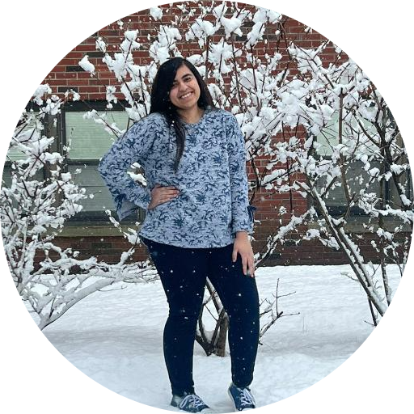

|  |
Zinia NooraniStudent at University of Texas - Arlington I am Zinia Noorani - an international student from Paksitan. I have done my O'levels (6A,2B) and IBDP (37/45). I am a very social person and love to interact with other people around me. I love making friends and building meaningful connections. I aspire to be a successful Web Developer. |
| Duration | Organization | Position |
|---|---|---|
| July 2022 - Present | Castle Hills Montessori | Assisstant Teacher |
| May 2022 - July 2022 | Mona Montessori | Assisstant Teacher |
| September 2021 - May 2022 | AVI-Foods Siena Fresh | Student Worker |
| June 2020 - May 2021 | National Students Service Pakistan | Tutor |
| Native: | Urdu |
| Fluent: | English, Hindi |
| Conversational: | Sindhi, Kachi, |